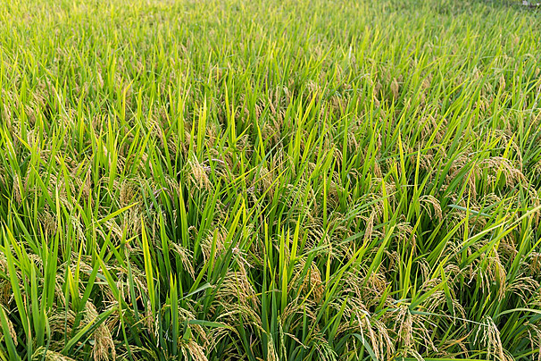
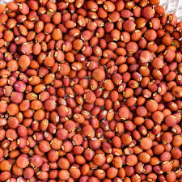

About
We are committed to serving Indian agricultural growth with value and aim to gain the trust of Indian farmers.
About
About


Our team of knowledgeable engineers continually innovates to create Agricultural products that support and empower Indian farmers. The marketing team excels in gathering suggestions from next-generation farmers and established Marvel users, fuelling continuous product and service improvement.
KSR Agricultural Implements & Works
KSR Agricultural Implements & Works


